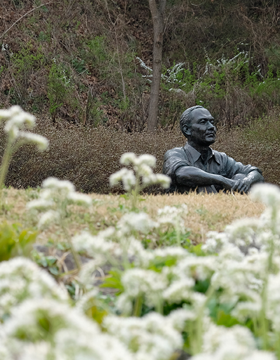

박수근 미술관
“한국인이 가장 사랑하는 화가 박수근”
어릴 적 교과서에서 접했던 경험 때문일 수도 있지만 그의 그림은 우리를 정서적으로 편안하게 만드는 매력이 있다.
박수근은 양구의 한 가난한 집 장남으로 태어나 풍족하지 못 한 유년시절을 보냈다. 지금 우리가 생각하는 박수근 화가의 가치와는 달리 그는 가난한 집안 환경 때문에 미술교육을 제대로 받은 적이 없다. 그는 가족의 생계를 책임지며 독학으로 미술에 대한 꿈을 키워왔다. 박수근 선생은 이름 없고 가난한 서민의 삶을 소재로 ‘인간의 선함과 진실함’을 그리고자 일생을 바친 화가이다.
화가 박수근은 한국인에게
아주 친숙하다.
그래서일까 박수근의 작품에서는 화려하거나 추상적인 것들보다 일상적이고 소박한 것들이 그려진다. 선과 윤곽으로 표현한 대상, 흰색, 회갈색, 황갈색으로 이루 어진 토속적 색채, 원근법을 무시하고 명암을 강조하는 기법 등을 사용한 것 들이 대부분 이다. 박수근 선생의 작품은 보는 이로 하여금 편안하고 담담하게 만드는 매력을 가지고 있다.
그는 단순한 형태와 선묘를 이용하여 대상의 본질을 부각시키고, 서양화기법을 통해 우리 민족적 정서를 거친 화강암과 같은 재질감으로 표현해냄으로써 한국적인미의 전형을 이루어냈다. 우리 민족의 일상적인 삶의 모습을 따뜻한 시선으로 그려냈던 그는 소박한 아름 다움을 구현한 서민화가이자 20세기 가장 한국적인 화가로 평가 받고 있다.
미술관에서 작품을 둘러보다 보면 단순히 미술품이 아니라
그 안에 박수근 선생의 삶이 담겨있다는 것이 느껴진다.
그림에서 하나의 장면으로 상상이 되며 그의 삶에 아주 잠시 들어가 볼 수 있다.
거칠지만 따뜻했던 그의 삶
그리고 그림
박수근의 작품들은 대체로 어두운 색감에 거친 질감이 특징 이다. 거칠고 차가운 느낌은 그림을 감상하는 이로 하여금 고단 했던 그의 생애를 느낄 수 있게 해준다. 실제로 박수근 미술관의 외벽은 화강암을 쌓아 올려 지어졌다. 그 벽을 보고 있자면 거칠고 단단하다는 느낌이 든다.
마치 그가 작품에 표현해낸 것처럼 말이다. 박수근 화백의 호는 “미석(美石)”이다. 탑과 비석 등에 많이 사용된 화강석의 아름다움에서 호를 따온 것 같다. 그는 석물에서 아름다움을 찾아 그것을 조형화하려고 했다. 박수근은 오래된 석물 표면의 까끌까끌한 질감을 표현해 한국적 미를 구현하려고 했다. 미술관의 외관에서도 그의 삶 하나하나를 느낄 수 있다.
가난하고 힘들었다고 그의 삶이 차갑고 어둡기만 했던 것은 아니었다. 그의 나이 스물여섯에 박수근의 인생의 동반자인 김복순 여사를 만났다.
그들이 처음 만난 장소는 빨래터였고 박수근은 그가 할 수 있는 가장 진실된 사랑을 글로 전했다. “나는 그림 그리는 사람입니다. 재산이라곤 붓과 팔레트밖에 없습니다.
만약 당신이 승낙하셔서 나와 결혼해 주신다면 물질적으로는 고생이 되겠으나 정신적으로는 그 누구보다 행복하게 해드릴 자신이 있습니다.
나는 훌륭한 화가가 되고 당신은 훌륭한 화가의 아내가 되어주시지 않으시겠습니까?” 생전 박수근 선생이 김복순 여사에게 전했던 편지 속 내용의 일부이다. 글에서는 김복순 여사를 향한 박수근 선생의 사랑과 따듯한 진심이 느껴진다.
김복순의 여사의 일기에서 표현된 박수근 선생 역시 더없이 따듯한 마음을 가진 사람임을 알 수 있다. “그이는 물건을 사실 때면 큰 상점에서보다는 노상이나 손수 레나 광주리장사에게서 사셨다. 광주리장사하는 여인들을 늘 불쌍히 여기셨고, 전후에 고생을 겪는 이웃들을 늘 애처롭게 여겨 그분의 그림의 소재가 모두 노상에서 장사하는 사람들인지도 모르겠다. ”
김복순 여사의 일기 중 일부인 위 내용은 박수근 선생의 마음이 늘 어디로 향하는지 알 수 있다. 그는 자기 자신도 여유로운 삶을 살지는 못했지만 타인을 가엾이 여기는 마음으로 살아가는 사람이었다. 그의 생이 가난했을지라도 그의 영혼이 얼마나 따듯했는지 그가 바라보는 사람들을 그려낸 그의작품 그리고 미술관 곳곳에서도 느껴볼 수 있다.
자연 그림 그리고 사람
박수근 미술관의 가장 큰 매력은 미술관을 위해 자연이 존재하는 것이 아니라 자연 속에 미술관을 그려 넣은 것 같은 “어울림”이다. 미술관 전체를 천천히 둘러보면 곳곳에서 박수근의 작품에 떠오르곤 한다. 마치 생전 그가 보고 그렸던 것을 함께 보고 있는 듯한 느낌이 든다. 나무와 풀숲에 둘러싸여 걷다 보면 자연 속에 박수근 선생의 그림과 그의 삶 그리고 내가 함께 녹아든다. 미술관 내 박수근 묘소로 가는 길을 걷다 보면 박수근 파빌리온과 현대미술관에서는 미술 소장품과 다양한 주제로 기획전이 개최되며 박수근 선생의 작품 이외의 특별전도 감상할 수 있다. 그는 작품을 남겼지만 그의 영향력은 현대의 많은 예술인들에게 지속적인 감명을 주고 있다.
올해 6월에는 박수근 미술관 내에 어린이 미술관을 개관했다. 이곳에는 예술과 첨단 기술이 함께 녹아있다. 또한 박수근 선생의 어린 시절 이야기를 좀 더 친근하게 접할 수 있고 어린이들의 오감을 자극하는 체험공간 역시 다양하게 준비되어 있다. 지역 예술가들과 함께 꾸며낸 이 공간은 꼭 어린이만을 위한 공간은 아니다. 어린이들이 즐길 수 있는 것은 물론 부모님도 함께 박수근 선생의 예술관을 이해하기 쉽게 다양한 자료를 체험과 놀이를 통해서 배울 수 있는 곳이다. 박수근 미술관은 단순히 한 화가의 작품만을 전시해둔 곳이 아니라 공간 그 자체로 자연과 예술 그리고 사람을 품어낸 공간이다. 숨을 돌리며 박수근 선생이 가지고 있는 예술성과 현대 예술가들의 작품을 보며 미술관이라는 공간 자체를 느껴볼 수 있는 곳이라고 할 수 있다.
양구 박수근 미술관은 ‘미술관’ 그 자체의 의미보다 자연을 즐기면서 예술 활동을 하고 화가의 삶으로 들어가 볼 수 있는 곳이다. 그림, 건축, 자연 모든 것이 분리되어 있는 것이 아니라 마치 원래 하나인 것처럼 편안하게 둘러보지만 알차게 즐길 수 있는 어쩌면 가장 완벽한 미술관이 아닐까 생각한다.